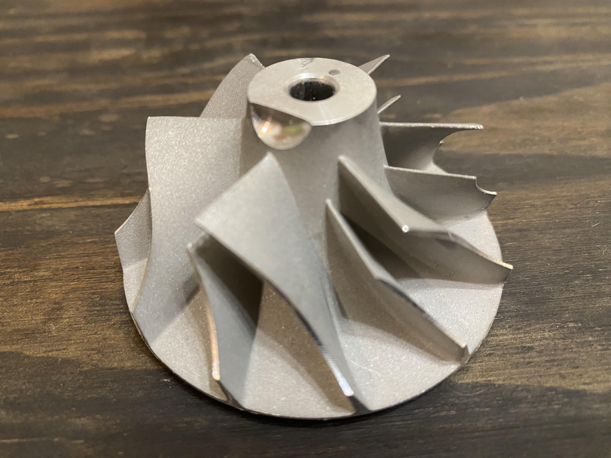
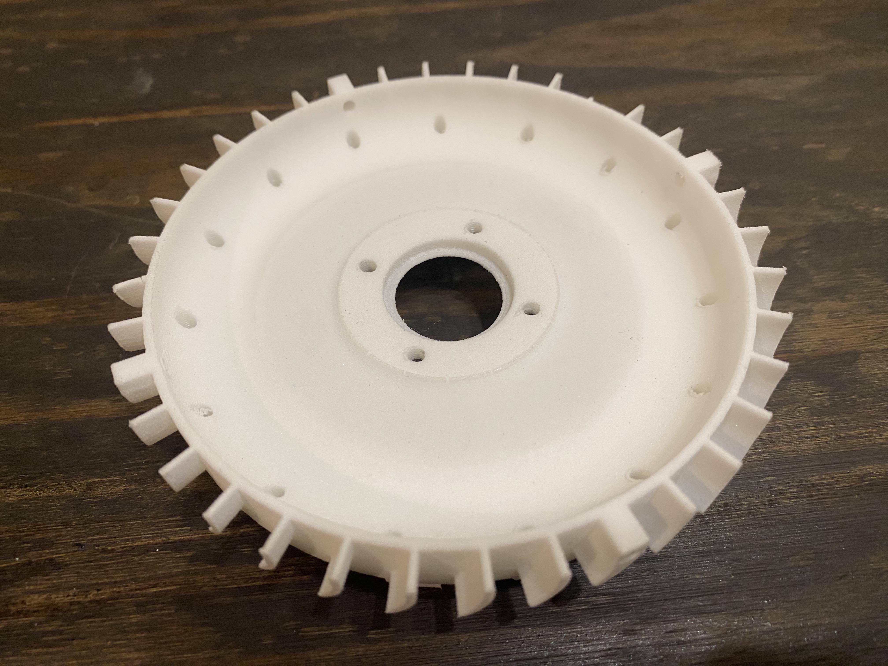

This project started back in March 2021, when I first learned about the Brayton cycle in my thermodynamics class.
Gas turbine engines are fascinating pieces of technology which are prevalent in power generation plants and modern airliners.
This design is based on the KJ66 engine, which was developed back in the late '90s.
I have modernized the design to improve performance, efficiency, and reliability.
The primary goal is to design, build, and test a micro-turbojet engine capable of producing 80-100 N of thrust.
design process:
Preliminary design and analysis: The first step was to establish a preliminary analysis based on design parameters.
The specifications of the KJ66 were used as a reference along with parameters from Benini et al.
A MATLAB script was created using the procedure highlighted in Hill & Peterson.
The compressor pressure ratio is 2.2 at a maximum of 120,000 RPM.
A maximum turbine inlet temperature of 1170 K was selected with kerosene as primary fuel source.
This results in an estimated specific thrust of 438.77 N-s/kg and TSFC of 3.3014E-07 kg/kN-s.
At an estimated mass flow rate of 0.22 kg/s at max RPM, the thrust is 97 N.
This is an improvement over the thrust of 75 N produced by the KJ66.
Design in CAD: After preliminary design, the process of modelling the engine began.
Figure 1 - Engine sectional view.
Compressor:
The rotor needs to produce a pressure ratio of 2.2 at a rotor speed of 120,000 RPM. A 1-stage centrifugal compressor with a dual diffusion setup is appropriate for an engine of this size and required performance parameters. When I first began planning this project in 2021, I decided to use turbocharger impeller as it is a cheap and easily obtained solution. The diffuser uses a set of radial vanes to reduce flow velocity and increase static pressure as well as a set of axial vanes to straighten flow into the combustor.

Figure 2 - Compressor impeller from turbocharger.
The rotor (Fig. 2) is the K26 flatback compressor wheel, model 5326-123-2038.
It is made out of aluminum with an outer wheel diameter of 66 mm,
inducer diameter of 46.15 mm. The rotor has 6 main blades and 6 splitter blades.
It meets our performance requirement of pressure ratio of ~2 at ~100,000 RPM.
The radial vanes on the diffuser (Fig. 3) were selected to be the reliable wedge-shaped design, commonly found in impeller-diffuser systems.
Velocity triangles were drawn to determine appropriate vane angles.
15 radial vanes were modeled to avoid potential resonance effects in conjunction with the rotor blades.
The radial vane design also allows for holes to be drilled into the wedges to allow for mounting screws and fitting tubes.
Figure 3 - Diffuser front, 3-D printed from polycarbonate.

Figure 4 - Diffuser rear, 3-D printed from polycarbonate.
Front cover.
Figure 5 - Compressor cover, 3-D printed from polycarbonate.